4. Modelo conceptual
Para realizar el diseño conceptual utilizaremos el modelo Entidad-Relación (en adelante E-R). Este modelo fue introducido por Peter Chen en 1976 y se basa en el estudio de las entidades (objetos) que forman parte del sistema, de sus características y de las relaciones que existen entre esas entidades. Este estudio se plasmará de forma gráfica en unos diagramas E-R.
Originalmente, el modelo E-R solo incluía los conceptos de entidad, atributo y relación. Más tarde, se añadieron otros conceptos, como los atributos compuestos, los atributos multivaluados y las jerarquías de generalización, en lo que se ha denominado modelo Entidad-Relación extendido.
A continuación veremos los diferentes elementos que componen los diagramas E-R.
4.1. Entidades
El primer paso para elaborar nuestro modelo será descubrir las entidades.
Una entidad es cualquier objeto concreto o abstracto del cual podremos almacenar información.
Elementos concretos pueden ser: un coche, un socio de una biblioteca, un libro, un cliente, una mesa, etc. Otros elementos abstractos que pueden ser entidades son por ejemplo: una idea, un sueño, un proyecto que aún no se ha llevado a cabo, etc. También hay otros que, aunque pueden ser más tangibles, algunas veces no son tan evidentes. Por ejemplo: una inversión en bolsa, un divorcio, una sentencia judicial, una declaración de un testigo, etc.
Las entidades usan sustantivos, tales como Pedido, Cliente, Venta, Articulo. Todo dependerá del contexto en el que estemos trabajando.
Para cada elemento que encontremos debemos preguntarnos si nos interesa guardar información sobre él y, en caso afirmativo, lo incluiremos como una posible entidad. Puede ocurrir que al final no sea necesaria y la descartemos, pero aconsejamos que inicialmente sea incluido todo aquello que nos parezca oportuno, puesto que ya tendremos tiempo después de filtrarlo.
Actividad 1
¿Qué entidades se te ocurren que puedan existir en un centro educativo?
Solución
Posibles entidades: Alumnos, Profesores, Aulas, Asignaturas, Notas, etc.
4.2. Ocurrencia
Una ocurrencia en una base de datos es cada instancia concreta de una entidad que se encuentra almacenada en una tabla. Es decir, representa un registro individual que cumple con la estructura definida por los campos de la tabla.
Ejemplo 1
Supongamos una entidad Pedido formada por los pedidos realizados por los clientes a una empresa determinada. Por ejemplo, serían ocurrencias:
- El pedido número 1201 realizado por Pepe Ruiz el día 28/08/2023
- El pedido número 1202 realizado por Blanca García el día 29/08/2013
- Etc.
Cada pedido es una ocurrencia de la entidad Pedido.
Ejemplo 2
Supongamos la entidad Clientes, que son los que realizan los pedidos a una empresa. Por ejemplo, serían ocurrencias:
- El cliente Pepe Ruiz es autónomo con sede fiscal en Polígono industrial Vara de Quart de Valencia y con CIF: B1234567890
- La cliente Blanca García es un particular con domicilio en Plaza Zocodóver 17 de Toledo y con el NIF: 123456789A
- Etc.
Actividad 2
Indica al menos una entidad y una ocurrencia de cada uno de los siguientes contextos:
Una academia de estudios. Una liga de balonmano. Una agencia de viajes. Una frutería. Una empresa de alquiler de bicicletas.
Solución
- Liga de balonmano. Entidad: Jugador; Ocurrencia: Paco López, que juega en la posición de pivote.
- Agencia de viajes. Entidad: Vuelo; Ocurrencia: VLC-MAD, con un precio de 120 euros.
- Frutería. Entidad: Producto; Ocurrencia: Naranjas navelate, con origen Valencia.
- Empresa de alquiler de bicicletas. Entidad: Bicicleta; Ocurrencia: BH de montaña, con frenos de disco.
4.3. Relaciones
Una relación, también llamadas interrelación, representa una asociación o correspondencia entre entidades. Es el elemento que nos permitirá relacionar las ocurrencias de las diferentes entidades. La representación gráfica de una relación es un rombo y en su interior se escribe el nombre de la relación, que suele ser un verbo o una acción verbal.
Por ejemplo: qué pedidos pertenecen a un cliente, qué coche ha sido vendido por qué comercial, etc.
Se denomina grado de una relación al número de entidades que participan en esa relación.
Relaciones de grado 2
Veamos un ejemplo que aparece en la gran mayoría de las empresas en las que existen varios departamentos y cada uno de los empleados pertenece a un determinado departamento. Tenemos dos entidades: por un lado Empleado y por otro lado Departamento. La asociación que utilizamos en este caso es Pertenece; es decir, los empleados pertenecen a departamentos.
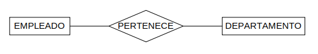
En el ejemplo anterior hay dos entidades que están asociadas por una relación, por lo que en este caso estaríamos hablando de una relación de grado 2 (también llamadas Binarias). Lo más habitual es encontrar relaciones de grado 2; sin embargo, también podemos encontrar otros grados.
Relaciones de grado 1
También llamadas Reflexivas o Unarias. Son en las que una relación crea una correspondencia entre unas ocurrencias de una entidad con otras ocurrencias de la misma entidad. Por ejemplo, la relación "Es jefe de" con la entidad Empleado. Algunos empleados son jefes de otros empleados.
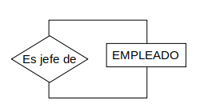
Relaciones de grado 3
También llamadas Ternarias. En estas relaciones intervienen tres entidades. Por ejemplo:
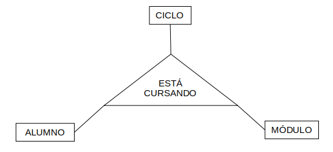
Atención
Es importante evitar generar una relación inexistente. Por ejemplo:
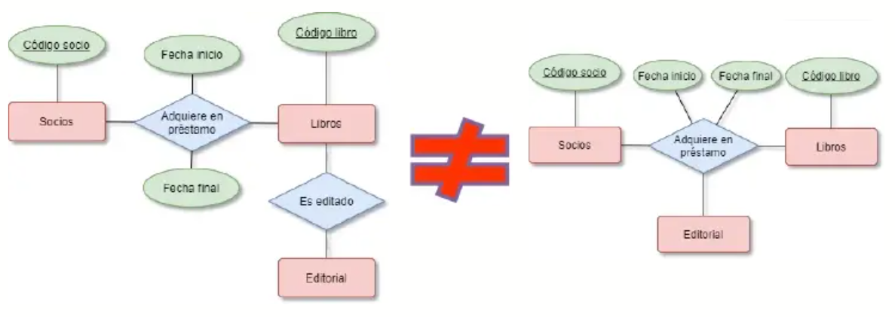
En este ejemplo se puede observar que ambos modelos son conceptualmente diferentes y, además, que el segundo es incorrecto, puesto que la entidad "Editorial" y la entidad "Socio" no deberían estar relacionadas.
Relaciones de grado n
Aunque es muy poco frecuente, podemos encontrarnos relaciones que asocien cuatro entidades. En ese caso sería una relación de grado 4 y así sucesivamente hasta grado n.
Actividad 3
En el ejercicio anterior se te pidieron entidades y ocurrencias, y ahora que sugieras, al menos, una entidad más por contexto y la relación entre esa entidad y la que propusiste. Indica el grado correspondiente para cada relación encontrada.
Por ejemplo: Instituto (entidad: Profesor; entidad: Alumno; Relación: ImparteClase).
Solución
- Una academia de estudios. Posibles entidades: profesores, estudios, cursos, asignaturas o módulos, alumnos, exámenes, etc.
- Una liga de balonmano. Posibles entidades: entrenadores, equipos, partidos, jugadores, goles, árbitros, tarjetas, etc.
- Una agencia de viajes. Posibles entidades: clientes, tipos de viajes, destinos, medios de transporte, hoteles, empresas de traslado, seguros, etc.
- Una frutería. Posibles entidades: productos, empleados, horarios de trabajo, tiques de compra, envíos a domicilio, etc.
- Una empresa de alquiler de bicicletas. Posibles entidades: gamas/modelos de bicicletas, bicicletas, revisiones, seguros, - clientes, precios, temporadas, etc.
4.4. Participación
Continuando con el modelo entidad relación, ahora, a partir de dos entidades relacionadas vamos a establecer su participación.
La participación de una ocurrencia de una entidad indica, en una pareja de números, el mínimo y el máximo número de veces que puede aparecer en la relación asociada a otra ocurrencia de entidad.
Las posibles participaciones son:
| Participación | Significado |
|---|---|
| (0,1) | Mínimo 0, Máximo 1 |
| (1,1) | Mínimo 1, Máximo 1 |
| (0,n) | Mínimo 0, Máximo n o muchos |
| (1,n) | Mínimo 1, Máximo n o muchos |
Ejemplo práctico:
Supongamos que tenemos la entidad Empleado y la entidad Proyecto asociadas por la relación "Trabaja en". La participación nos mostrará el número mínimo y máximo de proyectos en los que un empleado puede trabajar y, por otro lado, indicará en un proyecto cuál es el número mínimo y máximo de empleados que pueden trabajar en él.
Supongamos que preguntamos en la empresa quienes son sus empleados y nos dan 5 nombres (Juan, Ana, Pedro, Mario e Isabel) y por otro lado preguntamos cuántos proyectos tienen y nos dan 4 nombres de proyectos (Prometeo, Cuántico XXI, Hidráulicas Turia y Fibra óptica).
Para ver la participación debemos (esto solo lo hacemos ahora para comprender el concepto, después saldrá de forma automática) preguntar al cliente en qué proyecto trabaja cada uno de los empleados y dibujar los dos conjuntos, así como las líneas que muestran la correspondencia de la relación "Trabaja en".
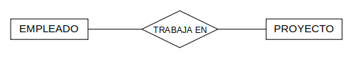
Como podemos observar, Juan trabaja en un proyecto, Ana en dos, Pedro en tres, Mario en ninguno e Isabel en uno. Por otro lado, en Prometeo trabajan dos empleados, en Cuántico XXI otros dos empleados, en Hidráulicas Turia un empleado y en Fibra óptica dos empleados.
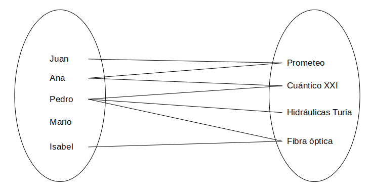
Una vez analizado el resultado debemos realizar las siguientes preguntas que responderemos nosotros con los conocimientos adquiridos de nuestras conversaciones con el cliente. En caso de duda, volveremos a preguntar al cliente o estudiaremos cómo ha funcionado la empresa, etc.
Empleados. Posibles preguntas:
-
¿Un empleado tiene que estar siempre trabajando en un proyecto o puede estar sin trabajar en ninguno?
En este caso podemos observar que existe un empleado (Mario) que no trabaja en ningún proyecto. Siempre que realicemos estas preguntas debemos fijarnos en la escala temporal, no solo tenemos que preguntarnos por el momento actual, también por el pasado y por el futuro. Por ejemplo:
- Al contratar un nuevo empleado ¿tendrá o no tendrá ya un proyecto en el que trabajar?
- Cuando finalice un proyecto ¿los empleados de ese proyecto ya estarán trabajando en otro o podrá haber un tiempo mientras son reasignados a otro proyecto?
- Etc.
De esta forma obtendremos la participación mínima: un 0 si el empleado puede estar en algún momento sin estar trabajando en un proyecto y un 1 si un empleado va a estar trabajando en uno como mínimo.
-
¿Un empleado puede trabajar como máximo en un proyecto o puede trabajar en más de un proyecto?
En nuestro diagrama está claro que Ana y Pedro están trabajando en más de un proyecto. Para obtener la participación máxima seleccionaremos un 1 si un empleado puede trabajar como máximo en un proyecto o n si puede trabajar en más de un proyecto.
Por tanto
Después de estas preguntas obtendremos la participación de los empleados, en este caso será (0,n).
Proyectos. Posibles preguntas:
Ahora realizaremos unas preguntas similares para los proyectos.
-
En un proyecto ¿siempre tiene que haber al menos un empleado que trabaja en él?
En nuestro caso, consideraremos que después de hablar con los clientes, nos han dicho que siempre antes de crear un proyecto se ha asignado un responsable que va a trabajar en él. Esto nos indica que todo proyecto siempre tendrá al menos un empleado que trabaja en él. La participación mínima en este caso será un 1.
-
En un proyecto ¿solamente puede estar trabajando un empleado o puede haber proyectos en los que trabajen varios empleados?
Como podemos apreciar en los conjuntos, hay proyectos en los que están trabajando varios empleados. La participación máxima en este caso será n.
Por tanto
Con la respuestas de estas preguntas obtendremos la participación de los proyectos, en este caso será (1,n).
Colocaremos la participación junto a nuestro diagrama E-R. La participación de los empleados respecto a los proyectos se colocará junto a la entidad Proyectos, y la participación de los proyectos respecto a los empleados se colocará junto a la entidad Empleados.
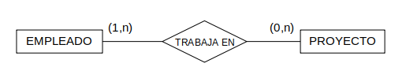
Aunque parece que lo estamos colocando al revés, no es así; se coloca de esta forma para que su lectura sea sencilla. De este modo podemos leer de izquierda a derecha que un Empleado Trabaja en 0 o n Proyectos. Y de derecha a izquierda podemos leer que en un Proyecto Trabajan de 1 a n Empleados.
4.5. Cardinalidad
La cardinalidad de una relación se calcula a través de las participaciones de sus ocurrencias en ella. Se toman el número máximo de participaciones de cada una de las entidades en la relación.
Veamos el ejemplo del punto anterior. Para obtener la cardinalidad tomaremos el valor máximo de cada uno de los pares de las participaciones obtenidas separados por el símbolo dos puntos.
- Para la primera vemos cuál es el valor máximo de (1,n), en este caso será n.
- Para la segunda vemos cuál es el valor máximo de (0,n), en este caso será n.
- El valor de la cardinalidad serán los valores obtenidos separados por el símbolo dos puntos, N:N. No obstante, si dejamos los dos valores con n puede dar lugar a error, suponiendo que la cardinalidad debe ser la misma en toda correspondencia. Por ello en estos casos una de las n se cambia por m y la cardinalidad sería N:M.
El resultado sería:
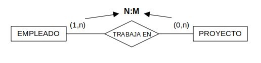
De modo que un empleado puede trabajar en m proyectos y en un proyecto pueden trabajar n empleados.
4.6. Atributos
Los atributos son las propiedades o características que deseamos guardar de una entidad o de una relación. Los atributos se representan como elipses conectadas al elemento al que pertenecen.
Los atributos permiten representar las propiedades de los objetos del sistema de información así como de las asociaciones entre ellos. En el modelo E-R los atributos se representan con elipses nominadas unidas por un arco a la entidad o relación a la que describen.
Podemos distinguir diferentes tipos.
Según su estructura:
-
Simple
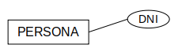
-
Compuesto o Estructurado. Los valores se componen de otros valores (que pueden ser de cualquier tipo). Este caso se representa uniendo con arcos las elipses de los atributos con las elipses de los atributos que lo componen.
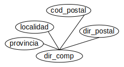
Según el número máximo de valores que puede tomar el atributo para cada ocurrencia de entidad o de relación:
-
Multivaluado. Puede tomar n valores como máximo. Se representa de 2 modos: etiquetando el arco con una n (o con una constante numérica si el máximo está limitado) y con una doble elipse. Por ejemplo, el Teléfono. Es posible que un empleado tenga más de un número de teléfono.
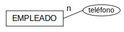
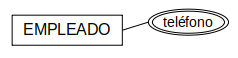
Los atributos multivaluados pueden convertirse en una relación binaria si tienen entidad suficiente.
Dependiendo del tipo de información que representa:
-
Derivado. Información que puede obtenerse a partir de otra información. Se representa con una elipse de trazos discontinuos.
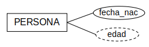